У каждого варианта свой номер, сквозной на всей странице. Пришлите номера тех, что нравятся, например «4, 5, 9, 12». Номер, которого нет в ответе, — отклонён. Слева в каждой группе для сравнения «как сейчас» (без номера). Нажатие на картинку открывает интерактивную страницу, где у вариантов те же номера.
Голубой у чипов, сегментов, частей экспедиции и основной карты раунда. Золотой у карты в редакторе стратегии, свойства карты, вариантов, жетонов, юнитов, улучшений и даже у галочки «выполнено». Зелёный у вкладок, шторок, действий над картой и листа фракций.
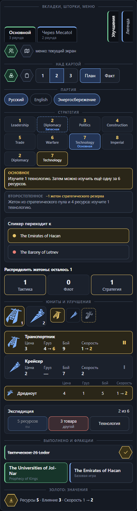
Те же элементы, только с другим правилом цвета. Золото как цвет значений (ресурсы, изменённое число, «пора сделать копию») во всех вариантах остаётся.
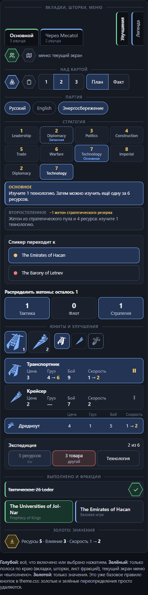
Голубой: всё, что включено или выбрано нажатием. Зелёный: только полоса по краю (вкладки, шторки, лист фракций), текущий экран меню и «выполнено». Золотой: только значения. Это уже базовое правило кнопок в theme.css: золотые и зелёные переопределения просто удаляются.
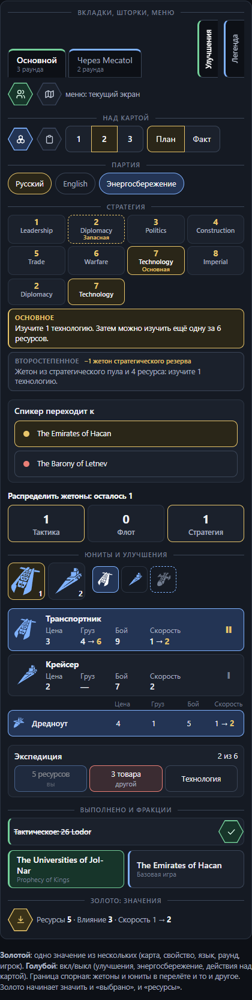
Золотой: одно значение из нескольких (карта, свойство, язык, раунд, игрок). Голубой: вкл/выкл (улучшения, энергосбережение, действия над картой). Граница спорная: жетоны и юниты в перелёте и то и другое. Золото начинает значить и «выбрано», и «ресурсы».
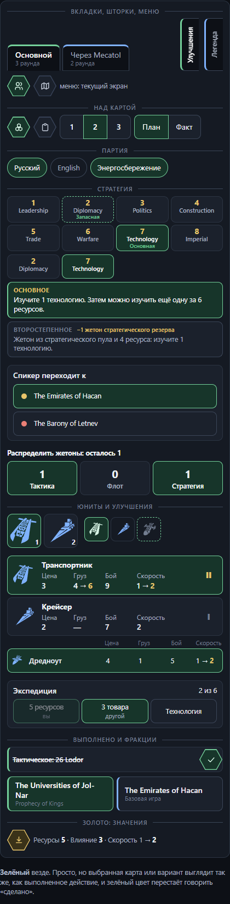
Зелёный везде. Просто, но выбранная карта или вариант выглядит так же, как выполненное действие, и зелёный цвет перестаёт говорить «сделано».
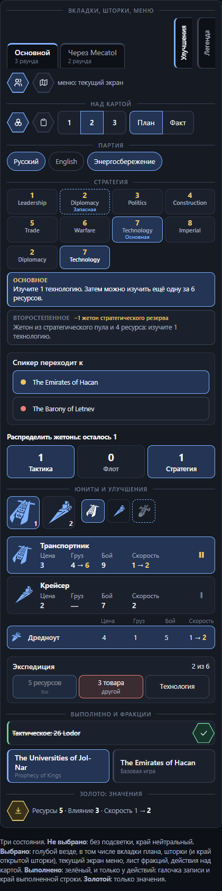
Три состояния. Не выбрано: без подсветки, край нейтральный. Выбрано: голубой везде, в том числе вкладки плана, шторки (и край открытой шторки), текущий экран меню, лист фракций, действия над картой. Выполнено: зелёный, и только у действий: галочка записи и край выполненной строки. Золотой: только значения.
Тактика и ручная правка: заголовок и «Завершить правку» сверху. Стратегия: голый заголовок и две кнопки внизу. Перелёт: текстовое «Закрыть выбор» и «Убрать маршрут» внизу. Выбор системы: своя голова с текстовой «Отмена».
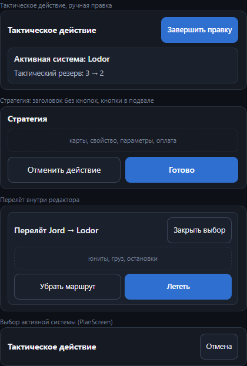
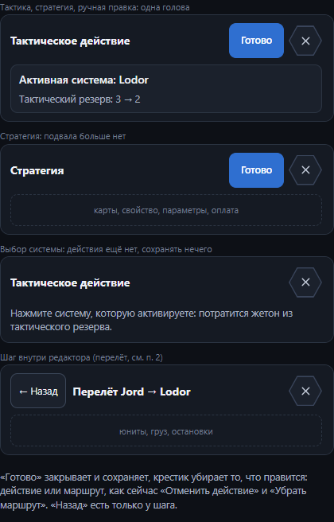
«Готово» закрывает и сохраняет, крестик убирает то, что правится: действие или маршрут, как сейчас «Отменить действие» и «Убрать маршрут». «Назад» есть только у шага.
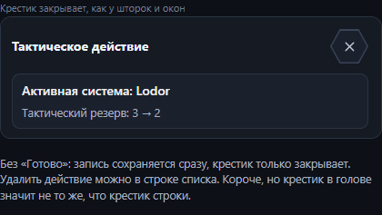
Без «Готово»: запись сохраняется сразу, крестик только закрывает. Удалить действие можно в строке списка. Короче, но крестик в голове значит не то же, что крестик строки.
Выбор юнитов открывается внутри редактора между «Источниками» и «Боем», до шести уровней вложенности. Закрывает его текстовая кнопка, а «Убрать маршрут» в подвале повторяет крестик строки источника.
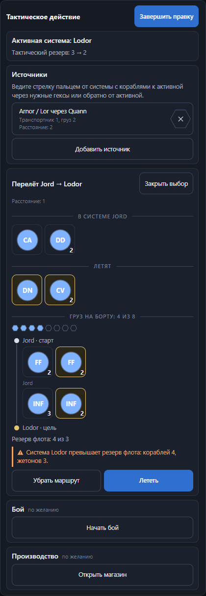
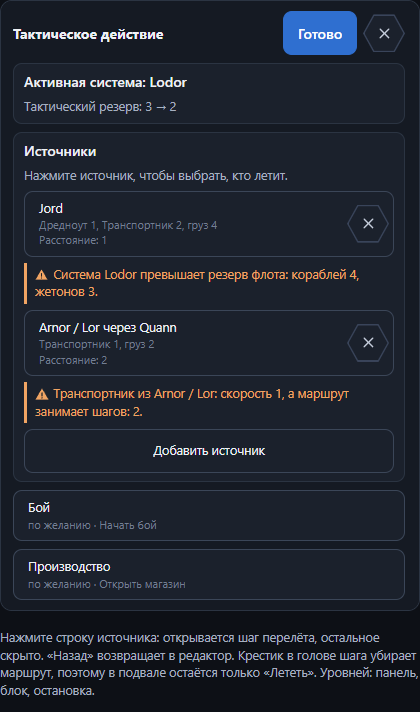
Нажмите строку источника: открывается шаг перелёта, остальное скрыто. «Назад» возвращает в редактор. Крестик в голове шага убирает маршрут, поэтому в подвале остаётся только «Лететь». Уровней: панель, блок, остановка.
Оба блока состоят из заголовка, пометки «по желанию» и одной кнопки; итог (потери, что построено) стоит отдельной строкой. Это два лишних блока в и без того длинном редакторе.
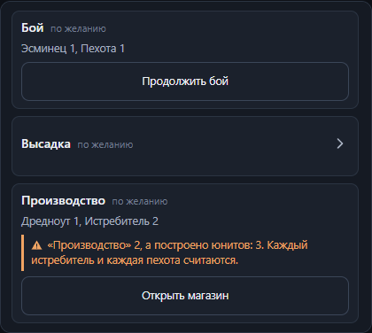
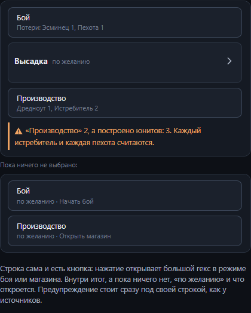
Строка сама и есть кнопка: нажатие открывает большой гекс в режиме боя или магазина. Внутри итог, а пока ничего нет, «по желанию» и что откроется. Предупреждение стоит сразу под своей строкой, как у источников.
Что показать в панели, PlanScreen решает цепочкой условий: голова выбора системы, тактика, стратегия, ручная правка, список. Перелёт и большой гекс лежат ещё глубже, внутри редактора.
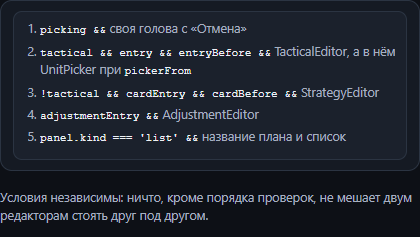
Условия независимы: ничто, кроме порядка проверок, не мешает двум редакторам стоять друг под другом.
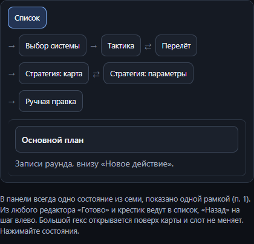
В панели всегда одно состояние из семи, показано одной рамкой (п. 1). Из любого редактора «Готово» и крестик ведут в список, «Назад» на шаг влево. Большой гекс открывается поверх карты и слот не меняет. Нажимайте состояния.
Всё на одном экране: восемь карт, оба свойства с текстом, параметры, улучшения, оплата и две кнопки в подвале. Параметры оказываются ниже края панели.
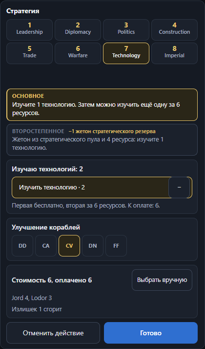
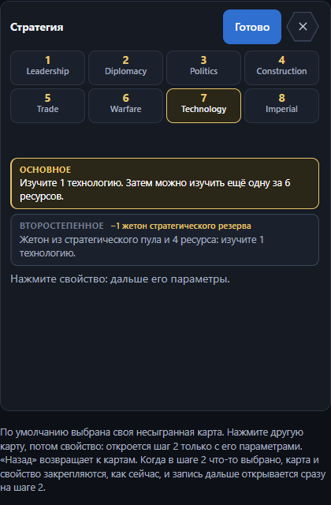
По умолчанию выбрана своя несыгранная карта. Нажмите другую карту, потом свойство: откроется шаг 2 только с его параметрами. «Назад» возвращает к картам. Когда в шаге 2 что-то выбрано, карта и свойство закрепляются, как сейчас, и запись дальше открывается сразу на шаге 2.
Шаг 2 открывается всегда, даже у свойств без параметров — одно правило для всех карт.
У свойств без параметров (второстепенное Imperial, Politics, Trade) действие записывается сразу, без шага 2.
У стратегии заголовок без кнопок, а «Отменить действие» и «Готово» стоят в подвале .strategy-foot, под оплатой, часто за краем экрана. У тактики и ручной правки кнопка сверху.
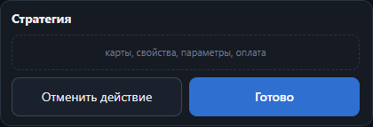
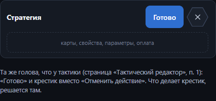
Та же голова, что у тактики (страница «Тактический редактор», п. 1): «Готово» и крестик вместо «Отменить действие». Что делает крестик, решается там.
В Politics выбор спикера собран руками: столбик кнопок, точка цвета через inline-стиль. Trade уже берёт PlayerChoice, но без группы, тем же столбиком. Над списком плана тот же выбор выглядит иначе: строка соединённых кнопок.
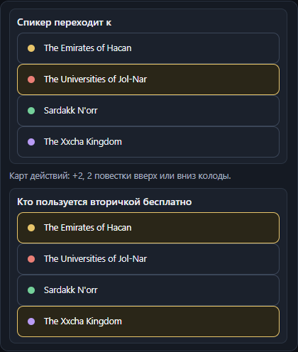
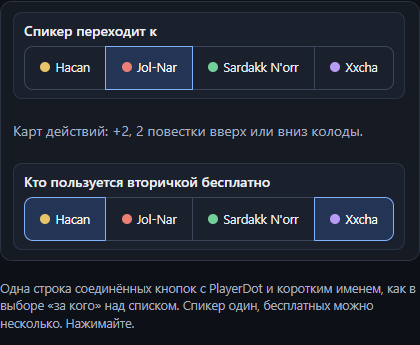
Одна строка соединённых кнопок с PlayerDot и коротким именем, как в выборе «за кого» над списком. Спикер один, бесплатных можно несколько. Нажимайте.
В Technology «−» стоит у правого края карточки, где по соглашению удаление, а делает уменьшение. В распределении жетонов свой круглый «−» в углу плитки. Счётчик с «−» и «+» в приложении уже есть: Stepper, как в ручной правке и оплате товарами.
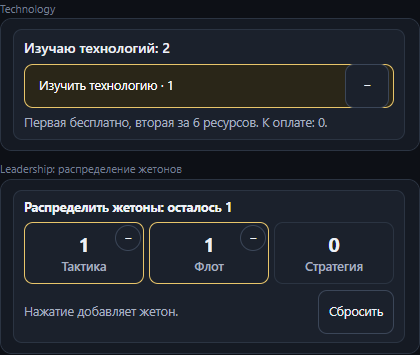
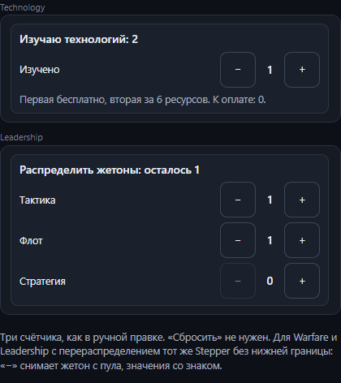
Три счётчика, как в ручной правке. «Сбросить» не нужен. Для Warfare и Leadership с перераспределением тот же Stepper без нижней границы: «−» снимает жетон с пула, значения со знаком.
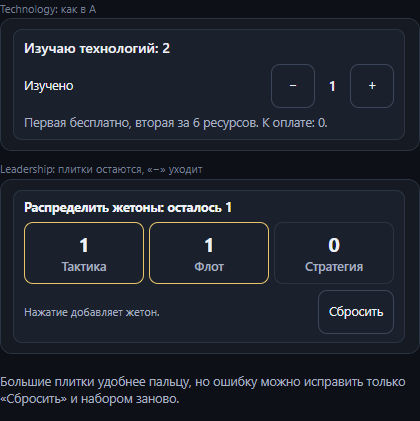
Большие плитки удобнее пальцу, но ошибку можно исправить только «Сбросить» и набором заново.
«Новое действие» раскрывает список из шести пунктов внутри закреплённого подвала: подвал вырастает и закрывает записи, а сам список стоит на четвёртом уровне. Нажмите кнопку в обеих панелях.
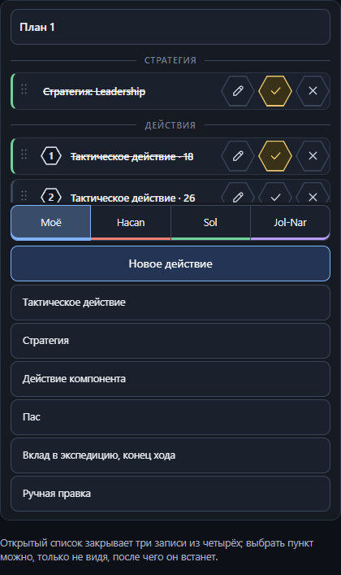
Открытый список закрывает три записи из четырёх; выбрать пункт можно, только не видя, после чего он встанет.
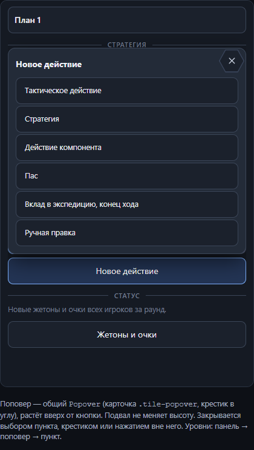
Поповер — общий Popover (карточка .tile-popover, крестик в углу), растёт вверх от кнопки. Подвал не меняет высоту. Закрывается выбором пункта, крестиком или нажатием вне него. Уровни: панель → поповер → пункт.
Карандаш у записи «Жетоны и очки» раскрывает под строкой плитки жетонов и очки всех игроков — пять уровней внутри списка, а строка растягивается на полэкрана.
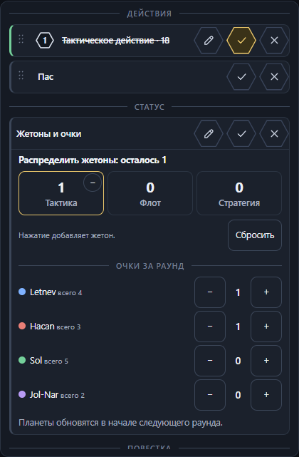
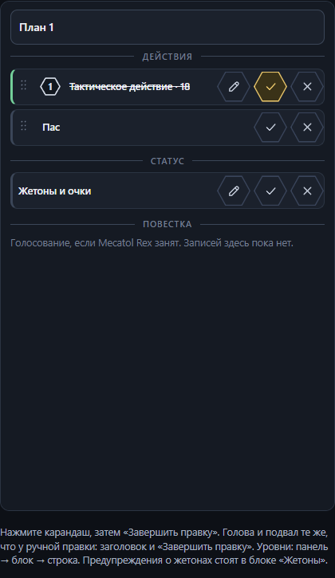
Нажмите карандаш, затем «Завершить правку». Голова и подвал те же, что у ручной правки: заголовок и «Завершить правку». Уровни: панель → блок → строка. Предупреждения о жетонах стоят в блоке «Жетоны».
То же с экспедицией: выбор части и оплата раскрываются внутри строки записи, пять уровней, предупреждения без своего места.
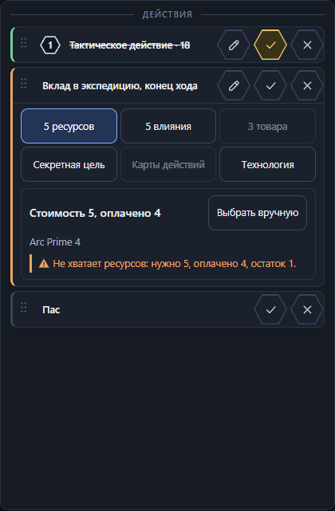
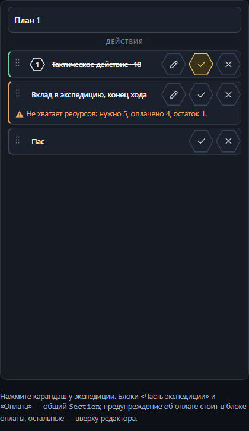
Нажмите карандаш у экспедиции. Блоки «Часть экспедиции» и «Оплата» — общий Section; предупреждение об оплате стоит в блоке оплаты, остальные — вверху редактора.
Нажатие на тактическое действие раскрывает под ним схему: каждый перелёт с остановками, бортом и грузом — до семи уровней вложенности, и одно действие занимает весь экран.
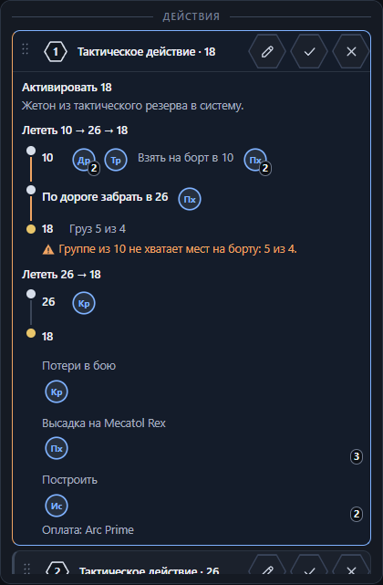
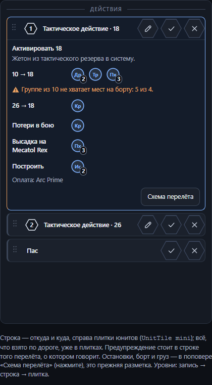
Строка — откуда и куда, справа плитки юнитов (UnitTile mini); всё, что взято по дороге, уже в плитках. Предупреждение стоит в строке того перелёта, о котором говорит. Остановки, борт и груз — в поповере «Схема перелёта» (нажмите), это прежняя разметка. Уровни: запись → строка → плитка.
Поповер «Схема перелёта» нужен: полная схема остановок по кнопке.
Поповер «Схема перелёта» не нужен: хватает стрелок и повтора перелёта на карте.
План удаляется текстовой кнопкой «Удалить план» рядом с «Копия», а раунд — кнопкой «−» в ряду номеров; обе выглядят иначе, чем крестик, который удаляет всё остальное.
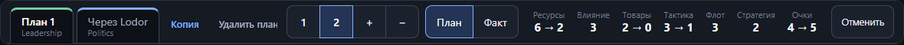
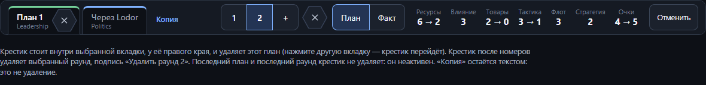
Крестик стоит внутри выбранной вкладки, у её правого края, и удаляет этот план (нажмите другую вкладку — крестик перейдёт). Крестик после номеров удаляет выбранный раунд, подпись «Удалить раунд 2». Последний план и последний раунд крестик не удаляет: он неактивен. «Копия» остаётся текстом: это не удаление.
В режиме «Расстановка» под магазином и подсказками идёт блок с поворотом, аномалией и планетой: её числа, черты, готовность и выбор владельца. Он виден только в одном режиме и только для планеты, выбранной на гексе; чтобы сменить контроль второй планеты, надо сначала нажать её на гексе. Переключайте режимы во всех трёх окнах.
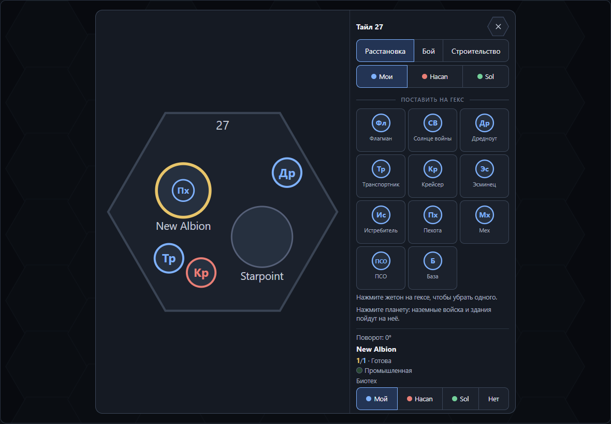
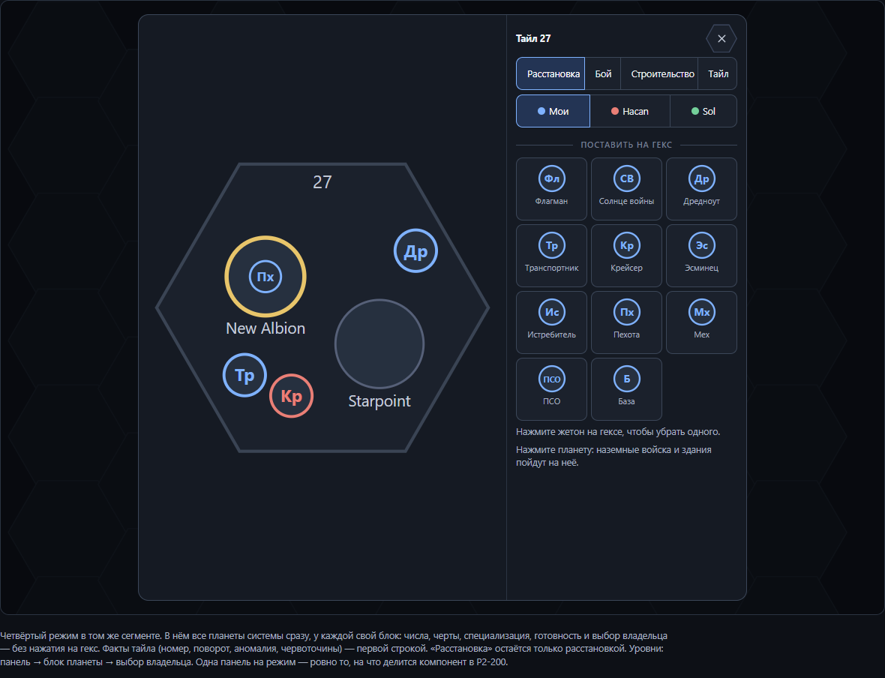
Четвёртый режим в том же сегменте. В нём все планеты системы сразу, у каждой свой блок: числа, черты, специализация, готовность и выбор владельца — без нажатия на гекс. Факты тайла (номер, поворот, аномалия, червоточины) — первой строкой. «Расстановка» остаётся только расстановкой. Уровни: панель → блок планеты → выбор владельца. Одна панель на режим — ровно то, на что делится компонент в P2-200.
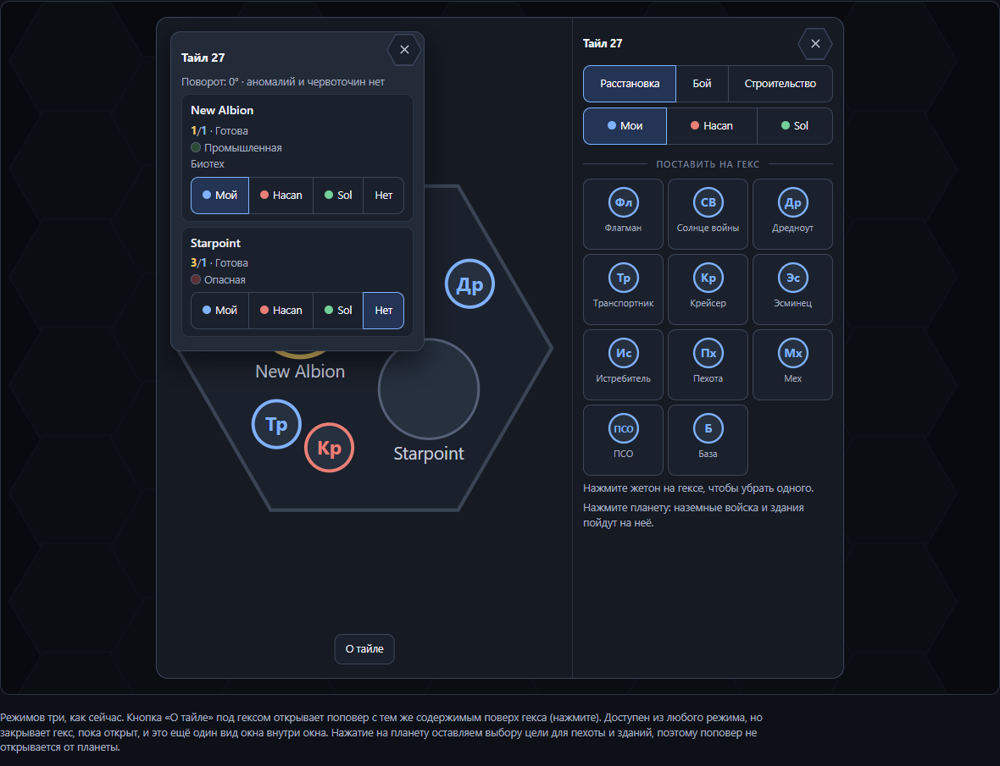
Режимов три, как сейчас. Кнопка «О тайле» под гексом открывает поповер с тем же содержимым поверх гекса (нажмите). Доступен из любого режима, но закрывает гекс, пока открыт, и это ещё один вид окна внутри окна. Нажатие на планету оставляем выбору цели для пехоты и зданий, поэтому поповер не открывается от планеты.
Картинка юнита с числом нарисована пятью способами: у каждой свой размер (62, 62, 84, 32, 40), своё место числа и свой радиус. В большом гексе стоят три из них — магазин, потери, а в редакторе ещё и выбор.
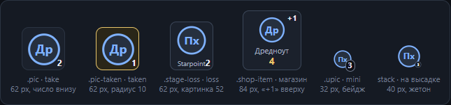
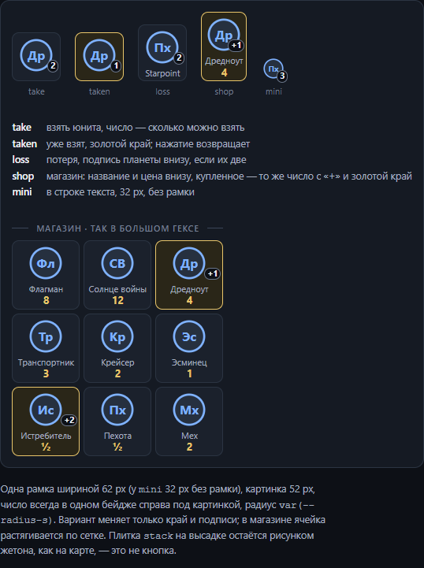
Одна рамка шириной 62 px (у mini 32 px без рамки), картинка 52 px, число всегда в одном бейдже справа под картинкой, радиус var(--radius-s). Вариант меняет только край и подписи; в магазине ячейка растягивается по сетке. Плитка stack на высадке остаётся рисунком жетона, как на карте, — это не кнопка.
В магазине название юнита остаётся под картинкой.
В магазине названия нет: ячейка — такая же квадратная плитка, как остальные.
Крестик, карандаш и галочка нарисованы шестиугольными кнопками 42×38 с заливкой. В строке плана их три подряд, и они тяжелее самого текста записи; в шапке, в строке источника и в карточке игрока шестиугольник тоже выбивается из спокойных прямоугольных карточек. Ниже одни и те же места: как сейчас и в трёх вариантах. Галочка нажимается, крестик и карандаш реагируют на наведение и нажатие. Во всех вариантах место для пальца остаётся 44×44, мельче становится только видимый знак.
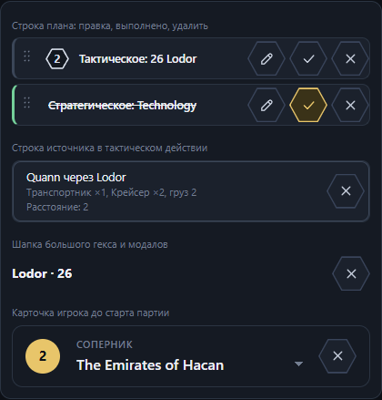
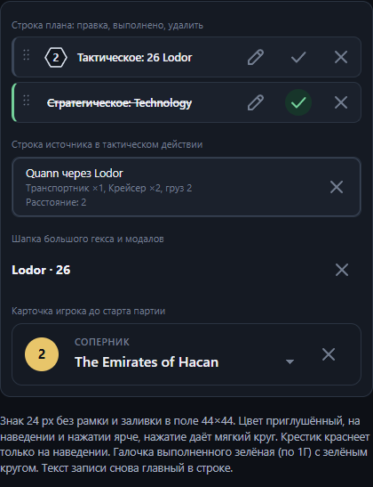
Знак 24 px без рамки и заливки в поле 44×44. Цвет приглушённый, на наведении и нажатии ярче, нажатие даёт мягкий круг. Крестик краснеет только на наведении. Галочка выполненного зелёная (по 1Г) с зелёным кругом. Текст записи снова главный в строке.
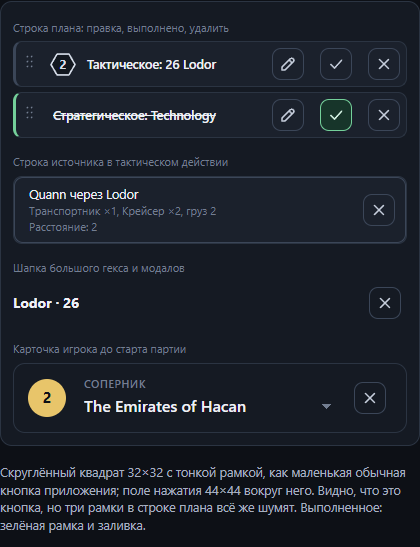
Скруглённый квадрат 32×32 с тонкой рамкой, как маленькая обычная кнопка приложения; поле нажатия 44×44 вокруг него. Видно, что это кнопка, но три рамки в строке плана всё же шумят. Выполненное: зелёная рамка и заливка.
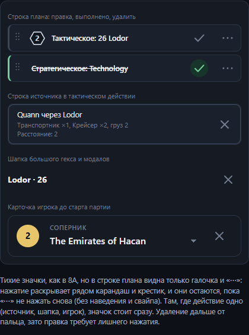
Тихие значки, как в 8А, но в строке плана видна только галочка и «⋯»: нажатие раскрывает рядом карандаш и крестик, и они остаются, пока «⋯» не нажать снова (без наведения и свайпа). Там, где действие одно (источник, шапка, игрок), значок стоит сразу. Удаление дальше от пальца, зато правка требует лишнего нажатия.
У панели «Вставить карту» единственная текстовая кнопка «Закрыть» в приложении. Везде закрывает крестик HexRemove.
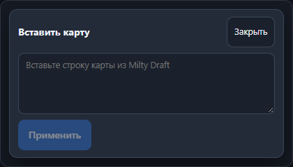
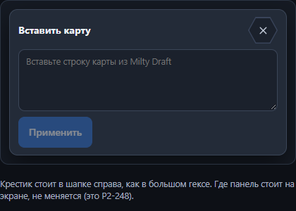
Крестик стоит в шапке справа, как в большом гексе. Где панель стоит на экране, не меняется (это P2-248).
Когда Thunder's Edge поставлен, в блоке экспедиции стоят текст, кнопка «Выбрать систему» и текстовая «Убрать». Убирает в приложении только крестик, а строка с системой и есть карточка.
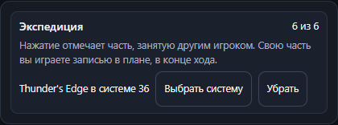
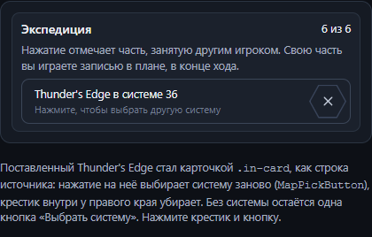
Поставленный Thunder's Edge стал карточкой .in-card, как строка источника: нажатие на неё выбирает систему заново (MapPickButton), крестик внутри у правого края убирает. Без системы остаётся одна кнопка «Выбрать систему». Нажмите крестик и кнопку.
Вопрос «точно?» собран четырьмя способами: рамкой .player-confirm у игроков, кнопками в карточке сохранённой партии и строками .row в раскладке и во вставке карты, с разным размером текста и кнопок. Справа ответ на вопрос возвращает кнопку, которая его вызвала; нажмите её снова.
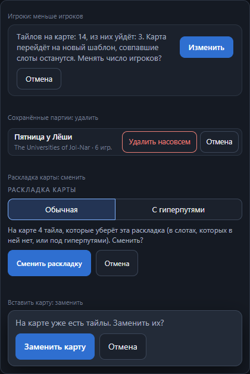
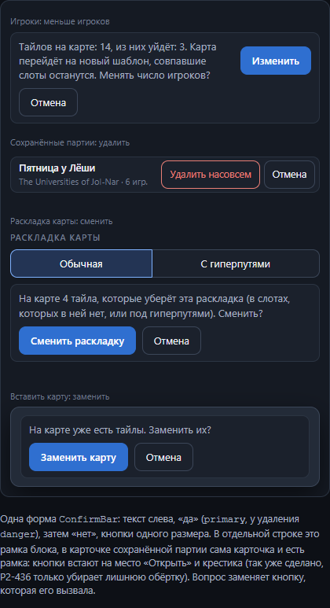
Одна форма ConfirmBar: текст слева, «да» (primary, у удаления danger), затем «нет», кнопки одного размера. В отдельной строке это рамка блока, в карточке сохранённой партии сама карточка и есть рамка: кнопки встают на место «Открыть» и крестика (так уже сделано, P2-436 только убирает лишнюю обёртку). Вопрос заменяет кнопку, которая его вызвала.
Легенда рисует свою планету: больше, без оттенка черты и значка технологии, с другими цифрами. На карте планета выглядит иначе, и легенда объясняет не то, что видно.
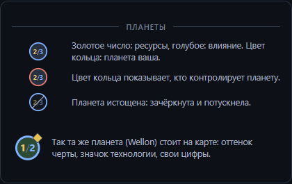
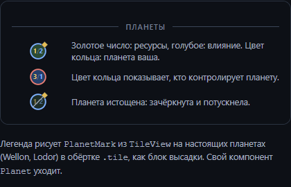
Легенда рисует PlanetMark из TileView на настоящих планетах (Wellon, Lodor) в обёртке .tile, как блок высадки. Свой компонент Planet уходит.
Улучшение корабля переключается карточкой .upgrade-card в шторке «Улучшения». У таблицы кораблей в карточке игрока есть второй вид того же, строка .ship-row-live, но ни один экран её не включает: onToggle никто не передаёт, в карточке игрока таблица только для чтения.
На «Партии» видно только, кто где сидит: пустые гексы без номеров. Сами тайлы ставятся позже и в другом месте, поверх игровой карты, и инструменты сборки остаются там на всю партию.
Кнопки внизу справа: «Собрать карту» и «Вставить карту». Нажатие на гекс открывает поповер с номером и кнопкой «Открыть большой гекс»; повтор тайла видно только в подсказке над картой. Карта на макетах упрощена: номера вместо планет.
Один экран. Правая колонка шире (480 вместо 330 px), блок «Кто где сидит» становится блоком «Карта»: раскладка, мини-карта, «Вставить строку Milty» и предупреждения. Нажмите пустую клетку или клетку с номером: откроется ввод номера (введите, например, 4 и выберите подсказку). Нажмите номер игрока, затем другой: игроки поменяются местами, их домашние системы тоже. Переключите раскладку: гиперпути встанут сами.
Над списком игроков переключатель. На шаге «Карта» мини-карта во всю левую часть, номера крупнее. Правая колонка как сейчас, но без схемы мест: места двигаются на шаге «Карта», а карточки фракций — на шаге «Игроки», поэтому перетащить номер с карточки на схему больше нельзя.
Над картой только «Сбросить вид»: кнопок «Собрать карту» и «Вставить карту» нет. Нажатие на гекс сразу открывает большой гекс (нажмите любой) с режимами «Расстановка», «Бой», «Строительство»: расстановка, бой и покупки остаются как есть. Если карта не собрана, подсказка над картой ведёт на «Партию».
Номера тайлов можно править на «Партии» и после старта партии; раскладка и места после старта закрыты.